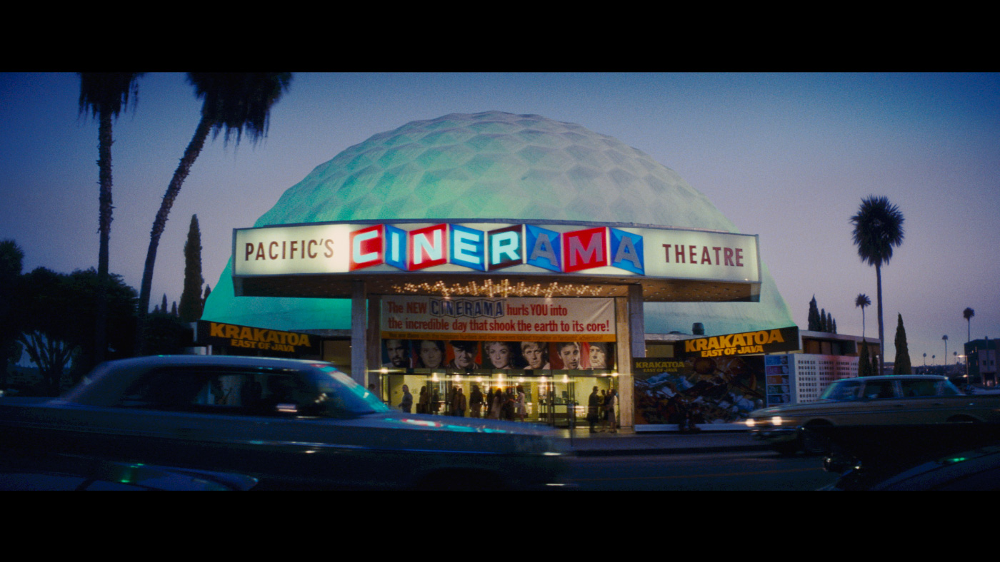

-
Drop The Needle: Tarantino says farewell to the Hollywood of his youth and his present in 'Once Upon a Time… in Hollywood'
by Mitchel Green - July 13, 2023
|
mitchelgreen34@gmail.com

source: Sony Pictures
This is the first in a new, ongoing series I’ll be writing about great needle drops throughout film history. What’s a needle drop? For this column, a needle drop is the use of pop songs not created for the film it’s in — existing pieces of classical music (shoutout Bob Fosse’s use of Antonio Vivaldi’s “Concerto in G” in “All That Jazz”) or songs written specifically for the movie (shoutout Spike Lee’s use of Public Enemy’s “Fight the Power” in “Do The Right Thing”) might get their own special pieces. Movies have influenced my taste in music more than anything else, so I wanted to highlight and celebrate that influence here.
I never really listened to music when I was younger. I certainly liked it, but not nearly to the extent I’m passionate about it now. I didn’t know the names of songs, I didn’t know the names of artists, and I didn’t seek out music outside of what I already knew. And most of the time, what I already knew came from movies. As a seven-year-old, I was obsessed with the Linkin Park song “What I’ve Done” because it was both in Michael Bay’s “Transformers” movie and in the Guitar Hero game my friend had (that obsession somehow did not turn into an undying love for the nu metal group). But for the most part, I didn’t hear much pop music through this mode of introduction. Most of the films I loved at the time used traditional film scores. I could hum you every major John Williams theme but couldn’t give you the melody for any chart-topping hit. Then, when I was 13, I was introduced to Quentin Tarantino.
My relationship with Tarantino’s movies has wavered over the years. The deeper I dug into his filmography, the more I found in his films that I didn’t like (and, in some cases, even hated). I didn’t care much for the two movies of his that I saw for the first time in theaters — “The Hateful Eight” remains my least favorite Tarantino film — and I have to rewatch “Pulp Fiction” or “Reservoir Dogs” every once in a while just to remind myself why I liked him so much in the first place.
More than anything else, I gravitated toward Tarantino’s work because he used music in ways I had never seen before. I was allured by his sensual use of soul music tracks like Dusty Springfield’s “Son of a Preacher Man” in “Pulp Fiction.” I was shocked by the dissonance created by setting scenes of gruesome violence to upbeat pop music, like the terrifying use of Stealers Wheel’s “Stuck in the Middle With You” in “Reservoir Dogs” and the frenetic energy of The Human Beinz’s “Nobody But Me” during the killing spree in “Kill Bill Vol. 1.” My record collection and saved songs on Spotify are full of 60s and 70s hits and deep cuts mainly thanks to Tarantino (among others) introducing me to this music in his movies.
Though not close to my favorite Tarantino film, “Once Upon a Time… in Hollywood” has his best soundtrack — one I blared on my car stereo throughout the summer of 2019 — and his single best needle drop. The sequence in question prefaces one last glorious night in the friendship of Rick Dalton (Leonardo DiCaprio) and Cliff Booth (Brad Pitt) and what we believe is the final night in the life of Sharon Tate (Margot Robbie), and Tarantino sets all this to The Rolling Stones’ “Out of Time.”
What makes this needle drop special is how many unique emotions it provokes. There’s the sadness that comes with saying goodbye to a dear friend. There’s the gleeful nostalgia of seeing the Hollywood of a bygone era, and the crass joy of Tarantino feeling a Taco Bell is one of the images of 1969 Los Angeles that he wants to be preserved for posterity. And then, of course, there’s the tension of knowing Sharon Tate is out of time, this night being that of her real-life murder in 1969.
Tarantino squeezes some more tension out of this song by using a different version than most viewers may be familiar with. He uses the version of “Out of Time” with orchestral production from the Stones’ album “Metamorphosis” as opposed to the more sparse original from their album “Aftermath.” This bit of subversion both creates a greater sense of unease for the viewer and foreshadows the alternate history ending with an alternate version of the song (not the first time he uses this technique either, see the cover version of “California Dreamin’” after Cliff leaves Spahn Ranch).
Moreover, the song’s lyrics cry out for Rick and Cliff to realize they are at the end of their road, both in their friendship and their place in a Hollywood system that doesn’t exist anymore. This sequence is Tarantino’s final farewell to the Hollywood of his youth, the one where a revolution was just beginning, and the old guard was clinging to whatever relevance they had left.
But this sequence is also Tarantino’s final farewell to the Hollywood in which he came to prominence. If “Once Upon a Time… in Hollywood” is looked at as the climax of his career like he wants it to be, this is Tarantino taking a victory lap on his way out the door. He had a good run, as did all the rest of the major Hollywood filmmakers that came through during the independent film boom in the 90s. When the film was released in 2019, the industry was about to change for good. This film was one of the last gasps before COVID came and destroyed the old production and distribution model. Now, movies like “Once Upon a Time…”, if they get made at all, are shoved onto streaming and treated as disposable content by their producers. The overlong, meandering nature of Tarantino’s film is the artist taking one last stroll through the park before it gets decimated to make room for a new highway. The use of “Out of Time” as we enter the film’s final act signals that he’s about to wrap up this era of Hollywood history with a bang.